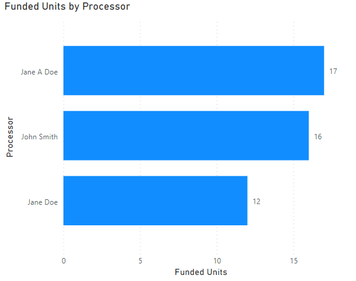

User Data Source
Reason
As your data grows or you start to pull in more data spanning more time you may run into a problem as shown in the screenshot below, where you have a user that has changed their name. What happens in Power BI is that because these are unique data points, it reflects that way in the visual creating, in this case, both a Jane A Doe and a Jane Doe bar in the graph:

What this can cause is a skew when a users looks at the report, thinking that Jane only worked on 17 funded loans where in reality she actually worked on 29. Worse would be if users start questioning if the data is reliable. Luckily there are a couple of ways that this can be resolved.
Users Table
Before we can get into the actually ways to resolve this we are going to need to gather some data to help resolve the problem. What we are needing is a users table. This table will usually have one or multiple unique identification column, this could be a username or employee id, really anything that is unique to the user themselves. The table will also have the full name or the display name of the user. The goal of this is to have a table of data with users names we would like to display in a report that have a data point that is unique to that user. A good example of this would be getting a table of loan officers names with their corresponding NMLS number. Since the NMLS number is unique to an loan office, we now have a way to identify a user in a dataset based on that instead of using the loan officers name from the loan origination system (LOS) data.
Resolutions
The resolutions listed below are only a couple of ways that this can resolved. In an ideal world you would have your user table available with your LOS data and could create a dataset where the names are already set from the data source server. In most cases I have not found this possible, which is why I have had to use the resolutions below for different datasets.
Relationships
Once we have gotten our users with unique ids setup in a users table, we are ready to start working on solving for the same user showing up multiple times in our visuals. The easiest way to accomplish this, especially when you are only dealing with on set of users, is using relationships in Power BI. Relationships allows us to use the unique id for the user found in both the LOS data and on our users table to use the full name from the users table in visuals with data from our LOS. To setup you a relationship, once you have your LOS data and User table loaded, head over to the Model tab in Power BI desktop:
Once that is open you will presented with a list your data sources, in this example I have a simple set of LOS data and a user table I created. Notice in both tables I have a UserID column. In the LOS_Data this column contains the unique id for the user that worked on a loan. In the User_Table the UserID column contains the unique ID mapped to the FullName of the user, so that I can use this name in my report visuals. To create the relationship simple drag the UserID from the users table to the UserID in th LOS data, Power Bi will do the rest and create the 1 to many relationship:
Once create we can use the FullName field from the Users_Table when we need to display user names in a visual and it will be used instead of what is in the LOS data. Using the earlier example with Jane we are now able to create a bar graph that has all Jane's funded loan showing as her instead of being split between the two names that are in the LOS data:
Lookup Column
In some case you either have multiple users you need to replace in a visual (such as a matrix or table visual), or you have multiple visual on a page that has multiple user roles on it (such as the Funding Report's operations page). In this case using one user table will not work as you cannot have multiple relationships between the same tables. While you could have multiple user tables this could end up being a maintenance and resource nightmare. A simpler solution would be just to use the LOOKUPVALUE DAX function to return the value from your users table. To do this we would create a custom column (click here if you need help creating a custom column) and then add the following code into the formula bar:
User_Lookup =
//Create a variable to store the looked up user, setting to blank if nothing is found
VAR _userLookup = LOOKUPVALUE(Users_Table[FullName], Users_Table[UserID], LOS_Data[UserID], BLANK())
//If the user lookup is blank set this column to the LOS user name, else use the looked up full name
RETURN
IF(ISBLANK(_userLookup), LOS_Data[User], _userLookup)
That is it, now you have a a column full of user names from the user table that can be used in visuals.
The nice thing about this lookup is that if for some reason a user is not found int he user table then it will just default back to what is in the LOS data. This can be helpful if your LOS data sync regularly but the user table isn't updated as frequently.
Conclusion
Using a user table is a great way to make sure report is accurate and reliable for your end users. The relationship and lookup way of getting users are just a couple of ways I have used in the past to make sure my data is in a good state. There are many different ways that this could be accomplished but hopefully these two will help you in your data exploration.